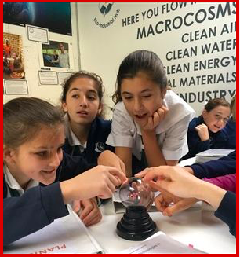

Technology is an essential tool for helping Hamlin girls become 'extraordinary thinkers and innovators, courageous leaders, and women of integrity.'
Hamlin classrooms weave a variety of technological tools to support the teaching and learning cycle. We approach the use of technology with a pedagogical lens where we act with intention and use a rigorous decision making process to select the tools that we incorporate into our program. We believe that technology cultivates curiosity, independent exploration, analysis, and unique creativity, while rooting the educational experience and shaping the lives of today’s digital citizens.

Teaching ethical and social responsibility and wise decision-making are critical 21st century skills. Digital literacy and citizenship are interwoven throughout the Hamlin curriculum, highlighting our belief that living an ethical digital life complements creativity and creation. We have been recognized by Common Sense Media as a “Digital Citizenship Certified School”, and actively work with our parent community to ensure our students receive a consistent message to encompass a digital world that remains active outside of the school day.
Innovation with technology is core to the Hamlin program. We offer K-8 programming while supporting a growing robotics program, ensuring that our girls are not only savvy consumers of technology, but more importantly, are creators. As a community, we are moving beyond simply using substitution technology (i.e., digital textbooks) and are working towards redefining teaching and learning with the aid of technology (i.e., student-driven learning). Recently, Hamlin was selected as an Apple Distinguished School. Download our Multitouch Book (iBook) to learn more about our program.
Hamlin teachers are dynamic thought leaders who present regularly at regional and national conferences and focus on projects that support learning with technology.
Lastly, Hamlin has a passionate and responsive technology team that serves our girls K-8, the faculty, and the staff.